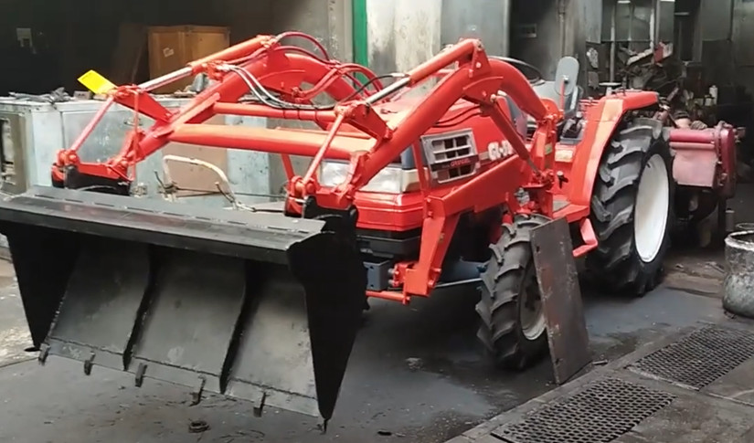
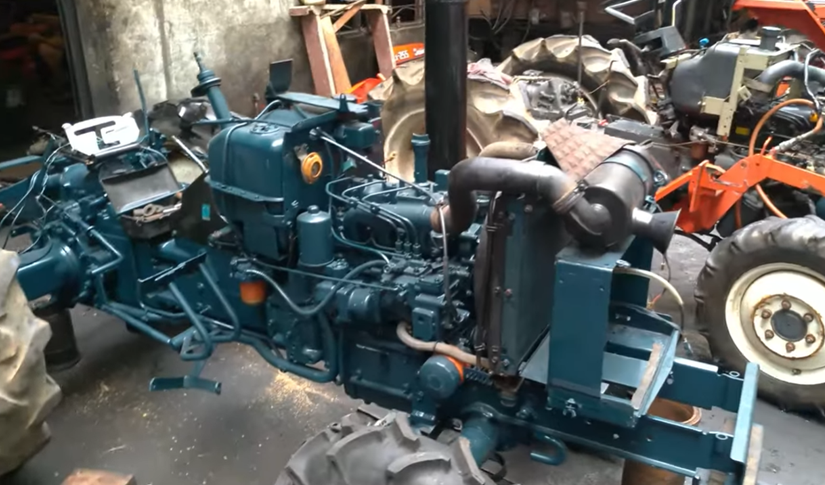
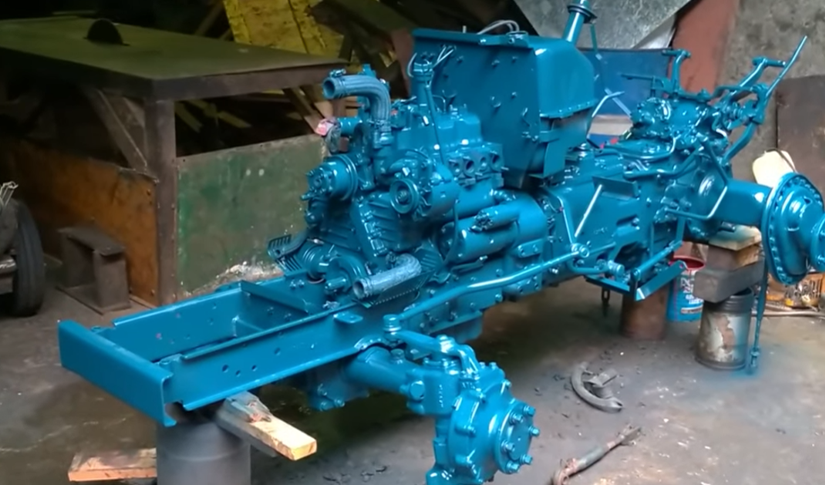

Tractor Reconditioning
Is your trusty tractor showing signs of wear and tear? Our tractor reconditioning service is your solution to breathe new life into your hardworking companion. Our team of experts specializes in assessing, repairing, and rejuvenating tractors of all makes and models.

Tractor Repair
When your tractor is down, your productivity suffers. Count on our efficient tractor repair service to get you back in the field swiftly. Our skilled technicians are well-versed in diagnosing and fixing a wide range of tractor issues.

Tractor Painting
Is your tractor's exterior looking weathered and worn? Give it a fresh, vibrant look with our tractor repainting service. Our skilled painters are experts in revitalizing tractor exteriors, ensuring they not only look great but are also protected from the elements.

Why Us?
Here at Philip Farm Tractors, we're your trusted source for quality reconditioned tractors. With a wide selection, competitive pricing, and expert guidance, we make tractor buying a breeze. Our commitment to customer satisfaction, after-sales support, and a stellar reputation set us apart. Choose us for a seamless, value-packed experience.